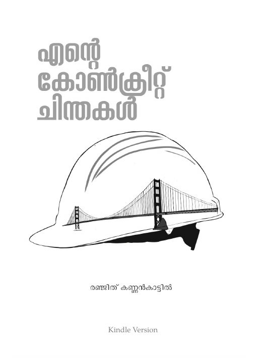
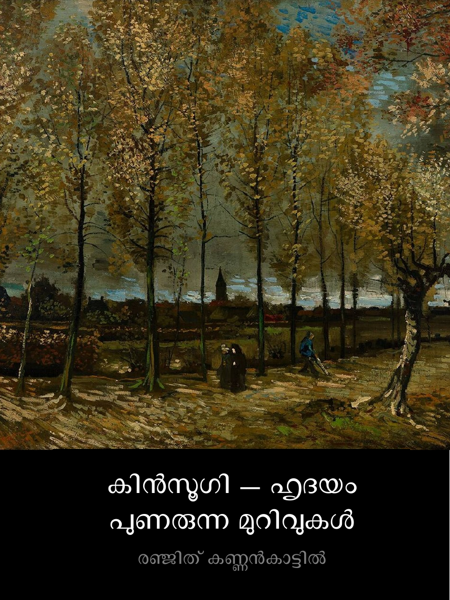

Three books, published under the name Ranjith Kannankattil, and one academic publication from graduate research. The first two books are free to download — copy and share them.

എന്റെ കോൺക്രീറ്റ് ചിന്തകൾ
Ente Concrete Chinthakal — Essays on Civil Engineering
A collection of Malayalam essays looking at civil engineering as it's actually practiced — landmark structures in Kerala and abroad, the design decisions and design failures behind them, and the engineers whose work shaped them. Written for readers outside the profession as much as inside it.
Released free-to-copy by the author (Copyheart license) — crowd-funded publishing via Litmosphere.

കിൻസൂഗി — ഹൃദയം പുണരുന്ന മുറിവുകൾ
Kintsugi — Hridayam Punarunna Murivukaḷ
Forty Malayalam poems taking their title from the Japanese art of mending broken pottery with gold — repair that leaves the break visible rather than hiding it. The collection moves between the personal and the political, using that same idea of visible mending as its throughline.
Released under Creative Commons BY-NC-SA — free for download and sharing. Cover: "Poplars near Nuenen," Van Gogh (public domain), via Sayahna Foundation.

വിണ്ടപാടിലൂടെ തിരികെ പോ വേനലേ
Vinda Padiloode Thirike Po Venale
A co-authored poetry collection with Ayappan and Smithin, built around striking, unconventional imagery and wordplay — three poets writing toward the idea that writers are, in some sense, always seeking refuge in pain.
Currently listed out of stock on the publisher's site — linking out as-is per your note.
2018
Control of Sediment Inflow into a Trapezoidal Intake Canal Using Submerged Vanes
Kalathil, S.T., Wuppukondur, A., Balakrishnan, R.K., and Chandra, V. — Journal of Waterway, Port, Coastal, and Ocean Engineering, 144(6), 04018020
Experimental study on using submerged vanes to reduce sediment entering a trapezoidal intake canal — relevant to how river water is diverted for irrigation and water supply without silting up the intake.
Published under the name Ranjith Kannankattil Balakrishnan — from graduate research at IIT Madras.